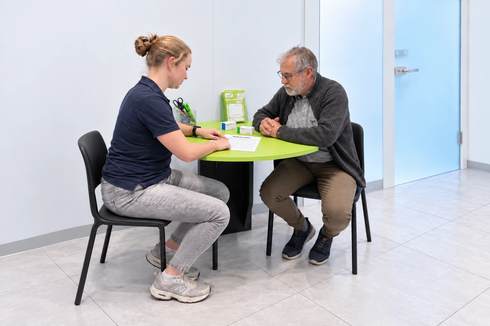
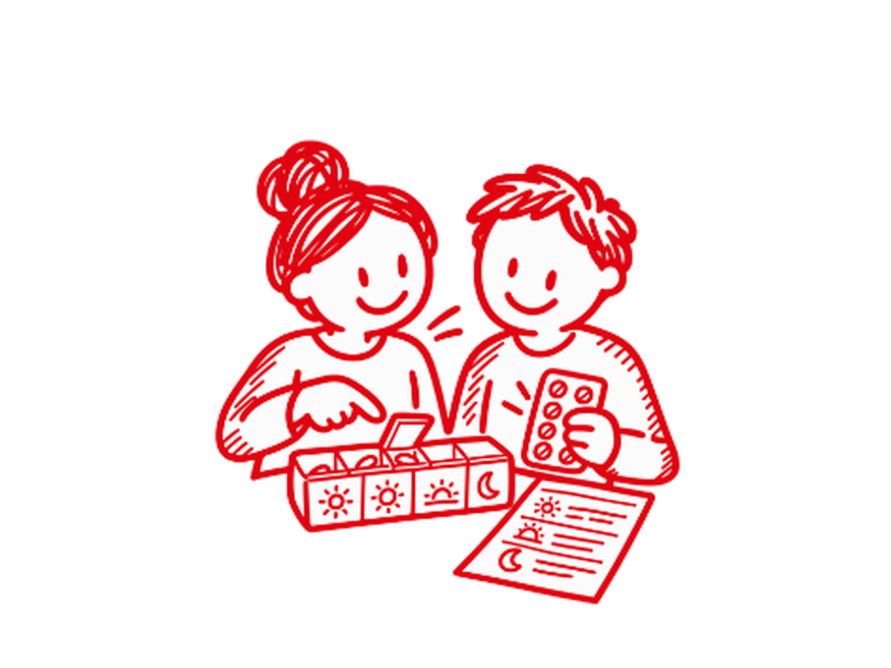
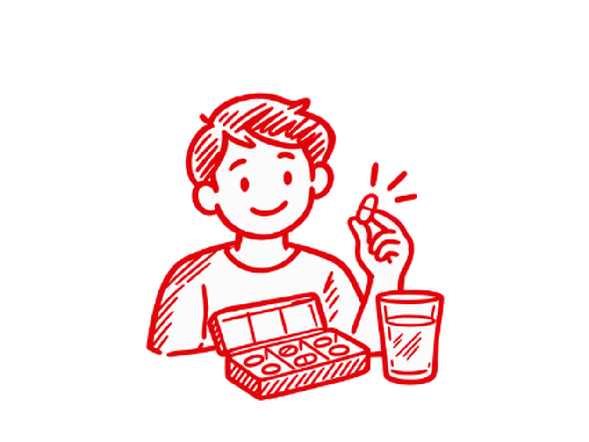

Orale Krebstherapie
Krebstherapie mit Tabletten? Wir begleiten Sie – und Ihre Angehörigen.
Wir prüfen Einnahme und Wechselwirkungen, erklären, woher Nebenwirkungen kommen können, und nehmen uns Zeit für Ihre Fragen – in zwei persönlichen Gesprächen.
- Kostenlos
- Angehörige willkommen
- Onkologisch fortgebildetes Team
Kennen Sie das?
Krebstherapie zu Hause.
Liegt es vielleicht an der Einnahme?
Krebsmedikamente sind hochwirksame Arzneimittel, die leider auch Nebenwirkungen verursachen können. Manche Beschwerden hängen mit der Einnahme oder mit Wechselwirkungen zusammen – diese Punkte prüfen wir gemeinsam mit Ihnen:
Wann Sie sofort Ihre onkologische Praxis anrufen sollten
- Fieber ab 38 °C oder Schüttelfrost
- Starker oder anhaltender Durchfall bzw. Erbrechen
- Blutungen oder blaue Flecken ohne erkennbaren Grund
- Atemnot, neuer Husten oder Schmerzen in der Brust
- Blasen oder offene Stellen an Haut oder Mund
- Plötzliche Verwirrtheit oder starke Schwäche
Diese Hinweise sind allgemein und ersetzen nicht die Absprache mit Ihrem Behandlungsteam. Maßgeblich ist, was Ihre Praxis Ihnen für Ihr Medikament mitgegeben hat. Eine Besserung von Beschwerden können wir nicht versprechen – wir helfen Ihnen aber, sie einzuordnen, und prüfen, ob Ihre Medikation dabei eine Rolle spielt.
Für Angehörige
Unterstützung für Angehörige
Während einer oralen Krebstherapie übernehmen häufig Angehörige Aufgaben wie das Richten der Tabletten, die Organisation von Terminen oder die Beobachtung von Veränderungen. Auf Wunsch beziehen wir sie in die Beratung ein und informieren sie über den sachgerechten Umgang mit den Medikamenten.

Sie begleiten einen erkrankten Menschen
„Mein Vater ist so erschöpft – wie richte ich seine Tabletten richtig?“ · „Ist dieser Ausschlag gefährlich?“
Wir zeigen Ihnen, worauf es bei Einnahme, Nebenwirkungen und Handhabung ankommt – kommen Sie gern gemeinsam zum Gespräch.

Sie beginnen eine Krebstherapie mit Tabletten
„Was mache ich, wenn ich eine Einnahme vergesse?“ · „Ist diese Übelkeit normal?“
Sie möchten von Anfang an gut vorbereitet sein und verstehen, woher Nebenwirkungen kommen können und worauf Sie achten sollten.
So läuft es ab
In vier Schritten zum persönlichen Gespräch
Unkompliziert und ohne Papierkram – wir begleiten Sie vom Therapiestart an.
-
1
Nur 30 Sekunden
Anspruch prüfen
In drei Fragen unverbindlich klären – für sich selbst oder für einen Angehörigen.
Jetzt prüfen ↓ -
2
Sofort möglich
Termin vereinbaren
Online anfragen oder direkt in Ihrer sk-Apotheke anrufen.
Termin vereinbaren ↓ -
3
Gern gemeinsam
Erstgespräch
Bringen Sie alle Medikamente mit – und gern Ihre Angehörigen. Wir besprechen Einnahme, Wechselwirkungen und Nebenwirkungen.
-
4
Nach 2–6 Monaten
Folgegespräch
Wir schauen gemeinsam, wie Sie mit der Therapie zurechtkommen, und klären neue Fragen.
Nur 3 Fragen
Einfacher Anspruchs-Check
Für sich selbst oder für einen Angehörigen – unverbindlich und kostenlos.
Familienunternehmen seit 1984
Durchgeführt von onkologisch fortgebildeten sk-Apotheker:innen
Viele unserer Mitarbeiter:innen in der sk-Apotheke im Einkaufspark Duckwitz sind im Bereich der Onkologie speziell fort- und weitergebildet.
„Eine Krebsdiagnose betrifft immer die ganze Familie. Gerade wenn die Therapie zu Hause stattfindet, entstehen viele Fragen – bei Erkrankten genauso wie bei Angehörigen. Wir nehmen uns Zeit, hören genau zu und begleiten Sie Schritt für Schritt.“
Häufige Fragen
Gut zu wissen
Neben den Therapien, die per Infusion in der Arztpraxis verabreicht werden, gibt es immer mehr orale Therapien: Krebsmedikamente in Tablettenform, die zu Hause eingenommen werden. Das bedeutet mehr Freiheit im Alltag – aber auch mehr Verantwortung für Erkrankte und Angehörige: bei der Einnahme, bei Wechselwirkungen und vor allem im Umgang mit Nebenwirkungen.
Anspruch haben Patient:innen, denen eine orale Krebstherapie neu verordnet wurde oder deren Therapie auf ein anderes orales Krebsmedikament umgestellt wurde – jeweils innerhalb der ersten sechs Monate. Die genaue Anspruchsprüfung erfolgt individuell in der Apotheke.
Ja, Angehörige sind ausdrücklich willkommen. Oft sind sie es, die die Tabletten richten, Nebenwirkungen als Erste bemerken und den Überblick behalten. Kommen Sie gern gemeinsam zum Gespräch. Wenn die erkrankte Person nicht selbst in die Apotheke kommen kann, sprechen Sie uns an – wir finden gemeinsam eine Lösung.
Bei Warnzeichen wie Fieber ab 38 °C, Schüttelfrost, starkem Durchfall oder Atemnot wenden Sie sich sofort an Ihre onkologische Praxis bzw. die Notfallnummer, die Ihnen Ihr Behandlungsteam gegeben hat. Außerhalb der Sprechzeiten erreichen Sie den ärztlichen Bereitschaftsdienst unter 116 117, im Notfall den Rettungsdienst unter 112.
Wer die Tabletten für eine andere Person richtet, sollte Einmalhandschuhe tragen und die Tablette direkt aus dem Blister in einen kleinen Becher drücken. Danach die Hände waschen. Die Medikamente in der Originalverpackung und sicher vor Kindern aufbewahren und Tabletten nicht teilen oder zerdrücken, wenn das nicht ausdrücklich erlaubt ist.
Eine Besserung können wir nicht versprechen – über die Therapie entscheidet Ihr Behandlungsteam. Wir helfen Ihnen aber zu verstehen, woher Nebenwirkungen kommen können, und prüfen, ob sie mit der Einnahme oder mit Wechselwirkungen zusammenhängen. Auffälligkeiten besprechen wir mit Ihnen und – mit Ihrem Einverständnis – mit Ihrer Praxis.
Nein. Die pharmazeutische Betreuung ergänzt Ihre ärztliche Behandlung. Die Therapie legt weiterhin Ihr Behandlungsteam fest. Wir unterstützen Sie dabei, die Therapie im Alltag richtig anzuwenden, und stimmen uns bei Bedarf – mit Ihrem Einverständnis – mit Ihrer Praxis ab.
Am besten alle Medikamente, die aktuell eingenommen werden – auch rezeptfreie Präparate, Nahrungsergänzungsmittel und pflanzliche Mittel –, den Medikationsplan, Unterlagen der Praxis zur Krebstherapie und, falls vorhanden, Notizen zu bisherigen Nebenwirkungen.
Fragen zur Therapie? Wir sind für Sie da.
Für Erkrankte und Angehörige – kostenlos und vertraulich. So erreichen Sie uns:
Online
Termin buchen auf
termin.skapo.de
Telefonisch
0421 59 75 68 0
kostenfrei erreichbar
Vor Ort
Ganz unkompliziert
in Ihrer sk-Apotheke
Ihr Ansprechpartner für Krebstherapien: Klaus Scholz
Apotheker und Gründer der sk-Apotheken (1984) · sk-Apotheke im Einkaufspark Duckwitz
scholz@sk-apotheken.de · 0421 59 75 68 0